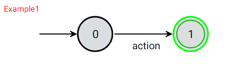
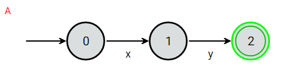
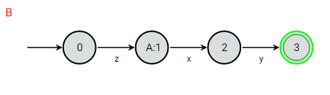

Help
Structure
Multiple automata can be defined in the same file.
Each automaton is first given a name which must begin with a capital letter.
This is then followed by an equals sign = then its definition and finally a dot ..
AutomatonName = {some definition}.
Sequences
Create a transition path from the current state to the next state with the specified label.
Example:
Input:
Example1 = action -> STOP.
Output:
Choices
Create a transition path from the current state to each of the specified states with the respective label.
Example:
Input:
Example2 = x -> STOP | y -> ERROR.
Output:

Terminals
A terminal is a way for the automaton to end.
There are two types of terminals, each is drawn as double bordered circle:
STOP which is green and indicates a successful termination, and
ERROR which is red and indicates an unsuccessful termination.
Referencing
One automaton can reference another automaton so long as it has already been defined by using its name.
Example:
Input:
A = x -> y -> STOP.
B = z -> A.
Output:
 Sub-Automata
More complex automaton can be created by using sub-automata.
Sub-automata are defined after the main automaton and are comma seperated.
Sub-automata and the main automaton can each reference one another other.
Example:
Input:
A = u -> (w -> A | x -> B),
B = y -> A | z -> STOP.